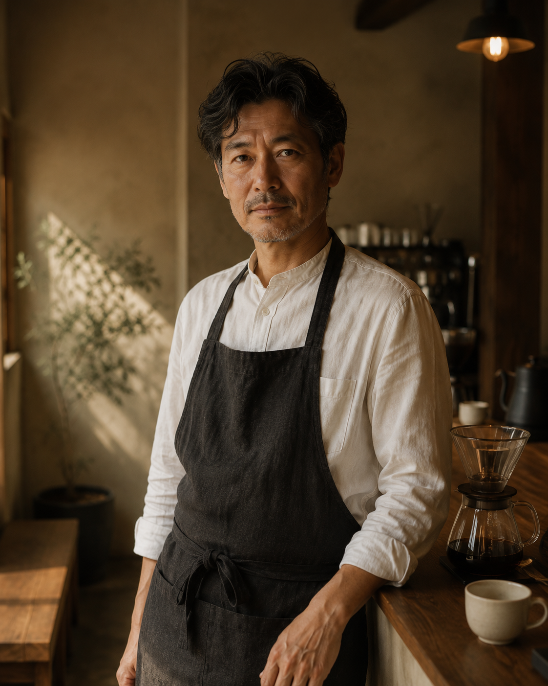
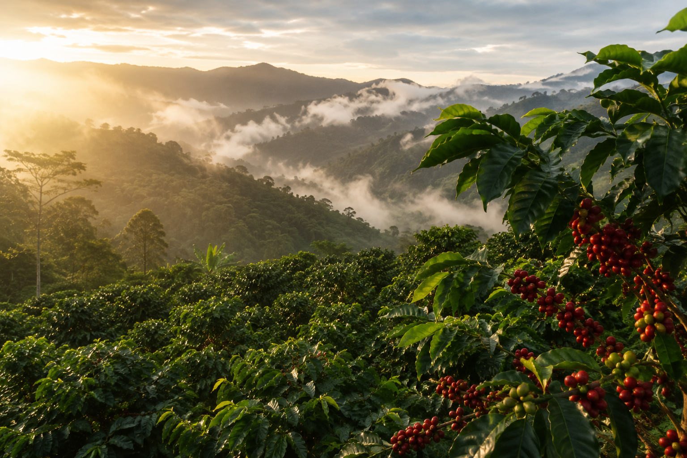
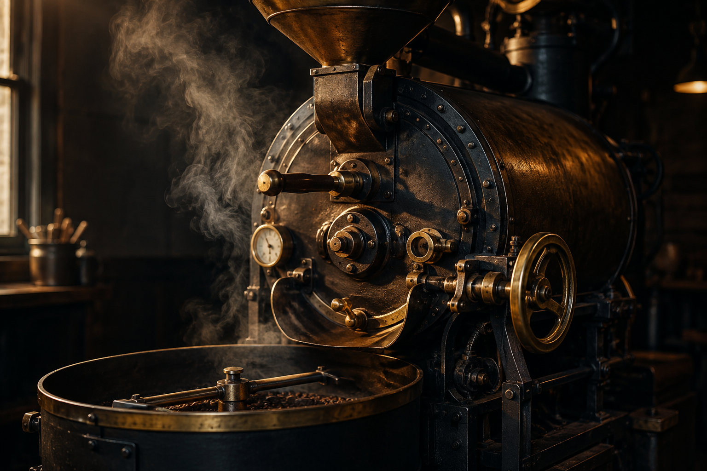

珈琲への、
終わりなき探求
良い豆を選ぶこと。丁寧に焼くこと。
誠実に淹れること。
その三つの約束を守り続けることが、
香舎の存在理由です。


厳選した世界の豆
香舎が取り扱う豆は、すべて店主が産地を直接訪問し、農園主と対話しながら選び抜いたものだけです。カタログやサンプルで仕入れることは、一切しません。土地の空気を吸い、水を飲み、農家の哲学を理解した上でなければ、その豆の本質はわからないと考えているからです。
現在の取扱産地は、エチオピア（イルガチェフェ・グジ）、グアテマラ（アンティグア・ウエウエテナンゴ）、コロンビア（ナリーニョ・ウイラ）、ケニア（キリニャガ）、インドネシア（マンデリン）、パナマ（ボケテ）の6カ国。それぞれの地域が持つ個性を最大限に活かすため、精製方法・品種・収穫年にまで徹底的にこだわります。
香舎の豆選定基準
- 標高1,500m以上のハイグロウン産地であること
- スペシャルティコーヒー協会（SCA）基準で80点以上のカッピングスコア
- 農薬不使用、または国際認証（オーガニック・レインフォレスト等）取得農園
- 農園主との直接契約、またはトレーサビリティが完全に担保されたルート
- 収穫から6ヶ月以内のニュークロップ（または適切に保管されたオールドクロップ）
店内焙煎

香舎では、すべての豆を店内の焙煎機で毎朝焼いています。仕入れた生豆を外部業者に委託することはありません。焙煎は、豆の個性と店主が直接対話する、最も重要な工程だからです。
豆ごとに異なる水分値・密度・糖度を測定し、その日の気温と湿度を加味した上で、火力・風量・時間を調整します。数値はあくまで指標。最終的には、焙煎中に発生するクラック音の変化、排煙の色と香りを五感で感じ取りながら、「その豆にとって最良の焙煎度」を見極めます。
焙煎したての豆は、翌日から翌々日にかけて急速に味わいが変化します。香舎では、焙煎後48時間以上経過した豆のみを提供し、炭酸ガスが十分に抜けたタイミングで最良の状態の珈琲をお届けします。
焙煎の工程
生豆の選別
目視・粒度・水分値を確認し、欠点豆を手作業で除去。豆の均質性を高めます。
焙煎
豆の特性に合わせて温度・風量・時間を調整。五感を頼りに最良の焙煎度を見極めます。
冷却
焙煎直後に急速冷却し化学変化を停止。この瞬間に風味が固定されます。
熟成
48〜72時間、炭酸ガスを適度に放出させながら風味を安定化。最良のタイミングで提供します。
一杯への、誠実さ
「抽出は、技術ではなく対話である。」
一杯の珈琲を淹れるとき、バリスタは豆の状態と向き合います。焙煎からの経過日数、その日の気温と湿度、豆の挽き目——これらすべてが、抽出の変数です。同じ豆でも、条件が変われば味わいは変化する。だからこそ香舎のバリスタは、毎杯ごとに微調整を繰り返します。
ハンドドリップは、お湯を注ぐ速度、温度、湯量のリズムが命です。熟練した手の感覚と繊細な味覚が一致したとき、その豆が本来持つ最良の表情が生まれます。数値や手順はガイドラインにすぎません。最終的に「美味しい」を決めるのは、一杯を受け取る方の舌と感性です。
香舎のバリスタは、常に「目の前のこの方に、今日という日の最良の一杯を」という意識で、カップに向き合います。それが、私たちの言う「誠実さ」です。注文をいただいてから豆を挽き、一杯ずつ丁寧に時間をかけて淹れる理由も、そこにあります。
私たちのこだわりを、
一杯でお確かめください。
メニューと産地のページで、香舎の世界を
さらに深くご覧いただけます。